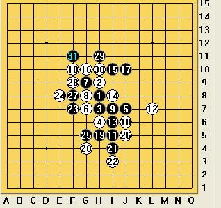

2009全团顾炜VS曹东
#1 2009全团顾炜VS曹东 作者：茗弈小刀 发表时间：2009-6-22 11:45:32
还是没能逃掉，棋评姗姗来迟，大家请见谅。
2009的5月的北京，中国棋院一片热气腾腾，只见炳继“老先生”呼前忙后，头顶上冒着细小汗珠，但“老人家”的嘴笑呵呵的没合过。原来中国2009全团赛正在紧密锣鼓的举行中。比赛场地中，选手们一桌一桌有条不紊的专注对弈着。此时大家看好的顾棋王正与五子神奇王子曹冬交锋着。松月开局，3打。顾老师执黑，感觉3打还是黑稍优的，双方行至16手定型，这也是比较常见的局面：

17手这里有多处选择：

F11的17比较稳妥，封白眠三，但棋王可能觉得太过保守没选择这点。在F7这个点比较常见，但白有强防，比如F10，那么黑就难杀。17在H5先活三，白必档外边，黑再右上做棋拓展K10，也是好手段，但那需要很强大的计算和时间，否则控制不好后边得不偿失。当然黑也可以直接在K10,但18强防I10,后面黑很优，就是杀不出，比较郁闷.17在15上边也是条路，黑优，但由于子力似乎还是较单薄，没有可借靠的地方故不好做杀。棋王经验是相当丰富的，棋力是深厚的，棋风也比较内敛稳沉的，再三权衡之下，选择了J10。

老练而帅气的冬冬18手毫不犹豫档住黑的眠三！21-23由于白左边优势明显，黑跳活3以进攻防守防守。

白左边的优势岂能轻易丢呢？故24防在了上边。25到31手，黑通过交换成功消磨了白左边一些空间.到这里感觉还是黑稍优的。31 ，29.15，17的棋型也是比较危险的。棋王故擒欲纵的棋风又展现出来了。前31手非常不错，可以说冬冬没有占到丝毫便宜。但对手是神奇的冬冬！噶噶，可不能等闲视之！

32尖锐地占住黑的手筋点！黑的优势瞬间化为乌有！老顾惊出一身冷汗，偶的个乖乖，小东子的棋越来越强悍了！大事不好啊！白在左边还有东西，俺还是老实防守搅搅局吧。行至45手，目前局面白稍优，但子力被分散，白考虑用牵制来控制黑棋；黑没什么棋，逼和是上策。
但冬冬却不这么看，嘿，偶的进攻这才开始！

46开始发动攻击，年轻小伙的闯劲展现出来。棋王的51手，败招！冬冬52手准确无误的杀着！
不得不佩服曹冬的攻击线路清晰，大局观明确。全盘的纠缠是亮点。顾老师的51如果防在要点上，还是有希望逼和这棋，可实战人的疲劳状态等都是决定胜负至关重要的因素。事后请教顾老师，他说之所以17手选择J10，因为这一点是作战的关键点，但这是一个很庞大的课题，由于后面是我的作战思路出了问题，故杀法我临时算错了。只能表示遗憾。
在此我们祝曹冬老师今后的棋更好，大家为您喝彩！也祝福我们一直支持爱戴的顾棋王，下次比赛发挥好的状态！我们永远支持您！
（本棋评由慎独，茗弈小刀写。）
［ 慎独 于 2009-6-22 12:03:36 时花20金币送鲜花一朵］
［ 慎独 于 2009-6-22 12:03:46 时花20金币送鲜花一朵］
［ 撒蓉儿 于 2009-6-22 13:42:05 时花20金币送鲜花一朵］
［ 撒蓉儿 于 2009-6-22 13:42:24 时花20金币送鲜花一朵］
［ 行云流水 于 2009-6-23 22:21:18 时奖励此帖[金币加 20 威望加1］
#2 Re:2009全团顾炜VS曹东 作者：阔哥 发表时间：2009-6-22 12:05:21
感觉17手不好，这手做其没控制白其同时黑其没白快#3 Re:2009全团顾炜VS曹东 作者：茗弈小刀 发表时间：2009-6-22 12:13:19
回楼上朋友，那么你觉得哪个17好呢？可以多摆几手不？谢谢。#4 Re:2009全团顾炜VS曹东 作者：聂淼 发表时间：2009-6-22 12:37:27
怎么必胜法，#5 Re:2009全团顾炜VS曹东 作者：茗弈雨 发表时间：2009-6-22 13:47:33
写得好，顶一个。#6 Re:2009全团顾炜VS曹东 作者：撒蓉儿 发表时间：2009-6-22 13:51:02
慎独· 姐姐 写得真不错，顾老师沉着老练，曹冬老师年轻气盛而稳健，是晚辈学习的榜样
#7 Re:2009全团顾炜VS曹东 作者：茗弈南极的绿洲 发表时间：2009-6-22 13:52:28
 据说我只会松月一打。学习了。。。
据说我只会松月一打。学习了。。。
#8 Re:2009全团顾炜VS曹东 作者：自来水 发表时间：2009-6-22 14:03:47
同情顾炜一下。。。#9 Re:2009全团顾炜VS曹东 作者：歇菜了 发表时间：2009-6-22 14:23:02
=======上图对应的爱五子棋谱代码如下，以便你拆解：========
h8h9h7h6j7g8i7g7g9j6i5l7i6i8i10g10j10f10h5g4g5j5i4i3f8
======================================================
=======上图对应的爱五子棋谱代码如下，以便你拆解：========
h8h9h7h6j7g8i7g7g9j6i5l7i6i8i10g10j10f10h5g4g5f5i4i3j3k2k10
======================================================
21的问题吧，21后漏杀了
［ 茗弈小刀 于 2009-6-22 14:33:49 时花20金币送鲜花一朵］
［ 潇洒 于 2009-6-22 14:48:40 时花20金币送鲜花一朵］
#10 Re:2009全团顾炜VS曹东 作者：茗弈小刀 发表时间：2009-6-22 14:41:17
请教楼上朋友下图的26反档怎么杀？#11 Re:Re:2009全团顾炜VS曹东 作者：屏蔽 发表时间：2009-6-22 14:58:43
引用：
原文由 茗弈小刀 发表于 2009-6-22 14:41:17 :
请教楼上朋友下图的26反档怎么杀？
=======上图对应的爱五子棋谱代码如下，以便你拆解：========
h8h9h7h6j7g8i7g7g9j6i5l7i6i8i10g10j10f10h5g4g5f5i4i3j3g6j5k5k4l3j4l4l5i2h3k6k10h10l9k8n7
======================================================
#12 Re:2009全团顾炜VS曹东 作者：茗弈南极的绿洲 发表时间：2009-6-22 15:15:38
直接V了吧，26反挡#13 Re:2009全团顾炜VS曹东 作者：茗弈小刀 发表时间：2009-6-22 15:19:56
万分感谢歇菜了朋友和李一老师的补充指导，加上这后边的分析这篇棋评更完整了。#14 Re:2009全团顾炜VS曹东 作者：茗弈小刀 发表时间：2009-6-22 15:26:51
=======上图对应的爱五子棋谱代码如下，以便你拆解：========
h8h9h7h6j7g8i7g7g9j6i5l7i6i8i10g10j10f10h5g4g5j5i4i3j3g6
======================================================
这个26我说的，还麻烦李一老师指点，谢谢。
#15 Re:2009全团顾炜VS曹东 作者：歇菜了 发表时间：2009-6-22 16:57:54
22挡这，我给的不是这个26啊
=======上图对应的爱五子棋谱代码如下，以便你拆解：========
h8h9h7h6j7g8i7g7g9j6i5l7i6i8i10g10j10f10h5g4g5j5i4i3f8
======================================================
=======上图对应的爱五子棋谱代码如下，以便你拆解：========
h8h9h7h6j7g8i7g7g9j6i5l7i6i8i10g10j10f10h5g4g5f5i4i3j3k2k10
======================================================
=======上图对应的爱五子棋谱代码如下，以便你拆解：========
h8h9h7h6j7g8i7g7g9j6i5l7i6i8i10g10j10f10h5g4g5f5i4i3j3g6k4
======================================================
这3个图拿终结者扫下，冬瓜的这个18就死了
［ 茗弈小刀 于 2009-6-22 17:04:41 时花20金币送鲜花一朵］
#16 Re:2009全团顾炜VS曹东 作者：茗弈小刀 发表时间：2009-6-22 17:05:41
谢谢啦！18是败，开始小眼兄帮我拆出来了！#17 Re:2009全团顾炜VS曹东 作者：聂淼 发表时间：2009-6-22 21:37:17
原来真的终结了
#18 Re:2009全团顾炜VS曹东 作者：聂淼 发表时间：2009-6-22 21:38:57
=======上图对应的爱五子棋谱代码如下，以便你拆解：========
h8h9h7h6j7g8i7g7g9j6i5l7i6i8i10g10j10l9
======================================================
１８这样呢
#19 Re:2009全团顾炜VS曹东 作者：茗弈小刀 发表时间：2009-6-22 21:50:51
目前只搞定这一个18，没时间，呵，弟弟有时间可以拆下。#20 Re:2009全团顾炜VS曹东 作者：木木夕 发表时间：2009-6-23 14:23:34
学习了，谢谢慎独，小刀老师。谢谢屏蔽，歇菜了老师。#21 Re:2009全团顾炜VS曹东 作者：我怕恋爱 发表时间：2009-6-23 21:44:35
写得不错，表扬一个。#22 Re:2009全团顾炜VS曹东 作者：纳米 发表时间：2009-6-24 20:13:02
好贴